Introduction
In modern automotive and industrial electronic systems, DC-DC converters have become increasingly important due to the rising demand for high efficiency and reliable operation across a wide load and environmental conditions. Traditional analog-controlled converters often struggle to balance fast transient response, stability, and digital integration requirements in advanced CMOS processes. These challenges motivate the design of a digitally assisted power converter that can achieve both high performance and high robustness.
This project aims to design a digital PID-controlled CMOS DC-DC buck converter featuring zero-crossing detection (ZCD) for enhanced switching efficiency (in DCM) using the TSMC 65nm process. The objective is to achieve stable regulation across a wide output range while minimizing switching loss and conduction loss, and improving transient response. By leveraging a digital PID controller, the converter benefits from programmability, PVT tolerance, and predictable loop dynamics compared with traditional analog control methods.

The PWM voltage mode control is used for the proposed converter. The input voltage is 2.5V, and the output voltage can be regulated to 0.9~1.8V. The maximum load current is 500mA, with ~50mV expected voltage ripple and 100mA current ripple. The detailed specifications are listed in the "Specifications" section.
System Architecture
Blocks designed in the proposed converter include flash ADC, power stage, gate drivers, non-overlap dead-time generation, DCVS level shifters, a PID controller, a digital PWM waveform generation, a zero-crossing detection (ZCD) module, a scan chain, and a clock generation. The LCR output power stage is implemented off-chip due to its large passive component requirements.
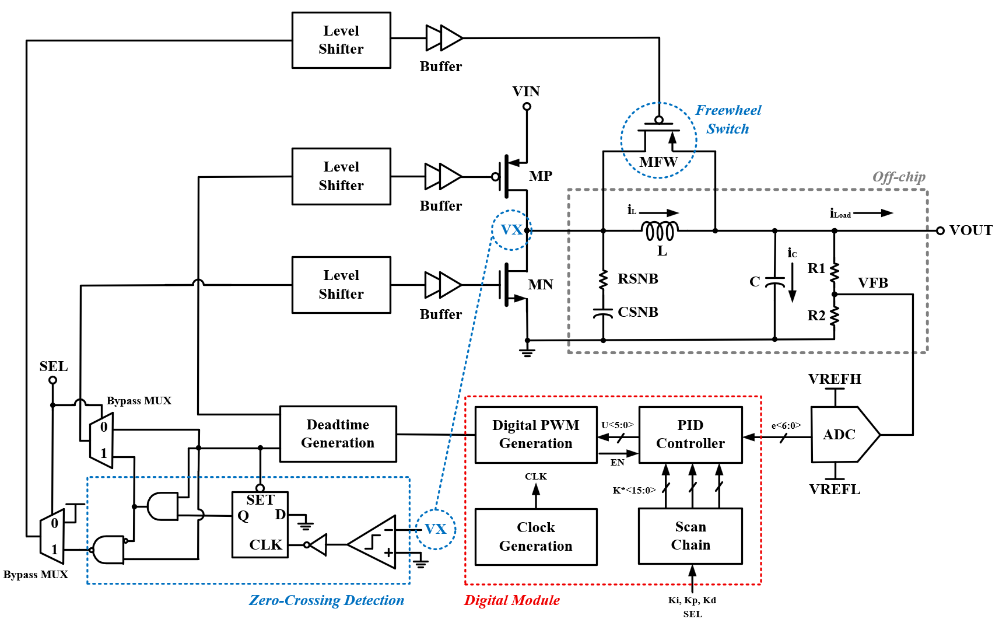Main Components
Power Stage
The power stage consists of the high-side and low-side switches (implemented using TSMC 65 nm 2.5V I/O devices) and an off-chip LC filter. The values of the inductor and output capacitor are determined based on charge-conservation principles and the slope calculations of the inductor current waveform. All necessary parameters are selected to ensure they are compatible with and can be directly applied to the design formulas.
The lengths of the switches are typically set to the minimum allowable value to minimize their turn-on resistance for a given width. The width sizing is determined by balancing conduction loss and switching loss: conduction loss decreases with increasing width, whereas switching loss increases with width. Therefore, for a given load current, there exists an optimal device width at which these two losses are equal if no other loss mechanisms are considered.
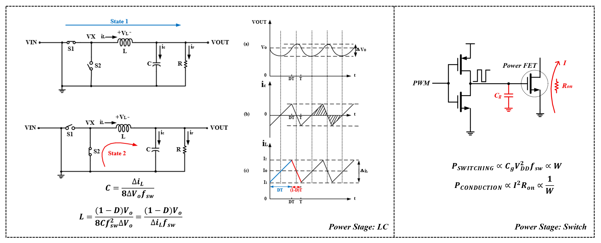In practice, additional factors must be included, such as the power consumption of other circuit blocks and the inductor’s DCR. The former is often negligible, while the latter must be accounted for by identifying practical inductors on Digi-Key, checking their DCR specifications, and incorporating those values into simulation.
Flash ADC and Comparator
The converter employs a flash ADC architecture to provide the high-speed conversion needed for fast control loops. Because a buck converter does not require high resolution, a 3-bit ADC was selected to balance performance, area, and complexity, resulting in a reasonable number of comparators. Each comparator uses a strong-arm latch topology, chosen for its high speed and low power consumption.
To further reduce the comparators' delay and input-referred offset, the input differential pair is upsized to improve transconductance and mitigate device mismatch. The remaining transistors in the latch are kept smaller than the input-pair to minimize parasitic capacitances, thereby lowering delay. Additionally, decoupling capacitors can be introduced to reduce clock feedthrough and kickback noise, improving overall comparator accuracy.
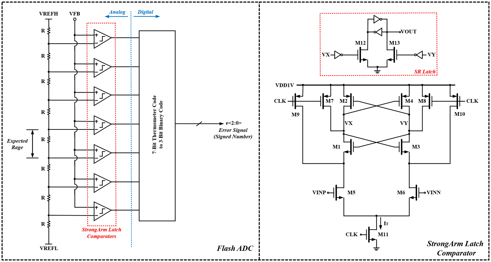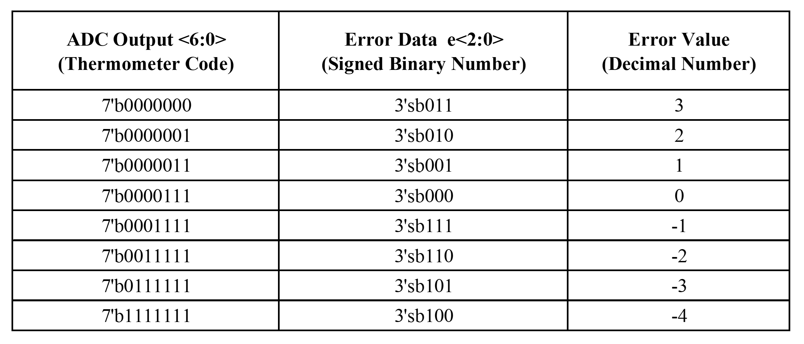
Dead-Time Generation
To reduce the additional power consumption caused by shoot-through current during switching, a dead-time generation circuit is implemented to produce two non-overlapping PWM waveforms. During the designated dead time, the gate of the power PMOSFET is held high while the gate of the power NMOSFET is kept low, ensuring that both devices cannot turn on simultaneously and eliminating shoot-through current.
However, this introduces a design trade-off. When the dead time is too long, the body diode of one device may conduct, causing a voltage drop and leading to extra power loss and potential device stress. For instance, if the NMOSFET body diode becomes forward-biased, the PMOSFET can experience a VDS that exceeds its nominal voltage. Prolonged or excessive dead time may therefore cause junction breakdown even when the PMOSFET is off. A commonly used guideline is to set the dead time to approximately 1% of the PWM period.
Level Shifter
Because the core operates at 1V, the generated PWM signal is also within the 0–1V domain and therefore cannot directly drive the 2.5V I/O devices used in the power stage. To address this, a 1V-to-2.5V level shifter based on the differential cascode voltage switch (DCVS) topology is implemented.
To reduce shoot-through current during transitions, the pull-down transistors (M1 and M2) are sized much larger than the pull-up transistors (M3 and M4). For example, when VIN transitions from low to high, VOUTN is pulled down to ground, turning on M4, which in turn pulls VOUT up to VDD2V5 while M3 turns off. During this transition, there can be a short interval in which both M1 and M3 are simultaneously on—specifically when VIN > Vth1 and VOUT < (VDD2V5 − |Vth3|). By making the pull-down devices stronger than the pull-up devices, the middle node is discharged more quickly, reducing the duration of this short-circuit condition and thereby lowering shoot-through current.
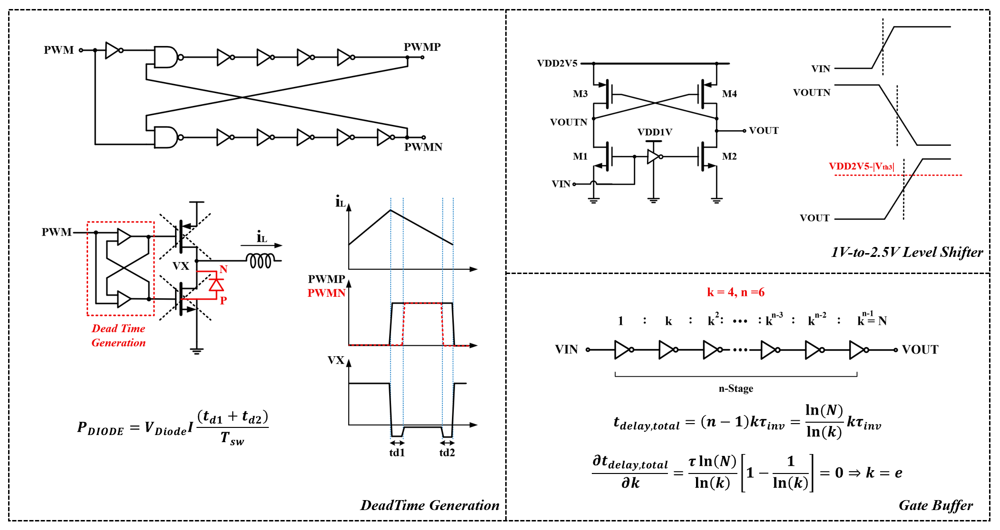Gate Buffer
To drive the large MOSFET switches in the power stage, an inverter-chain gate buffer is employed to minimize overall propagation delay. The optimal sizing ratio k and the number of stages n are obtained by minimizing the total path delay (i.e., setting the derivative of the delay expression to zero). Although the theoretical optimum for the stage ratio is e, a larger even value k=4 is used in practice to account for non-idealities beyond gate capacitance and ensure better matching.
Zero-Crossing Detection
When the converter operates in DCM, the inductor current can reverse direction, which degrades efficiency. To mitigate this issue, a zero-crossing detection (ZCD) module is added. By sensing the switching node VX through a comparator, the ZCD logic determines whether the NMOS switch should be turned off. In addition, a freewheel switch is added to short the inductor and dissipate the residual energy stored in it.
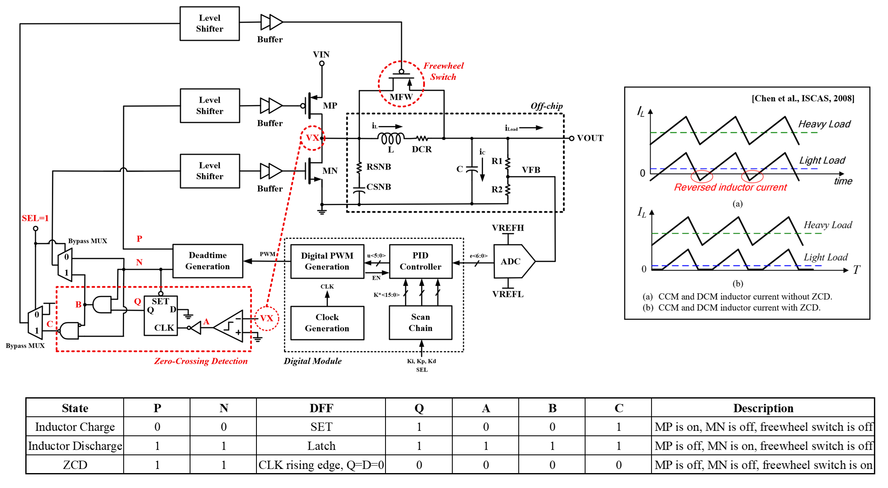PID Controller
In digitally controlled DC-DC converters, a Proportional–Integral–Derivative (PID) controller is commonly employed to regulate the output voltage. The proportional term provides immediate correction based on the voltage error, the integral term removes steady-state offset by accumulating long-term error, and the derivative term enhances transient response by reacting to rapid changes in the output. In this design, the PID controller operates at 1MHz, as it is triggered by the 64MHz DPWM every 64 clock cycles, resulting in a 1MHz PWM switching frequency. All three PID coefficients are implemented as 16-bit values and are loaded into the controller through the scan chain.
Digital PWM Waveform Generation
A counter-based Digital Pulse Width Modulation (DPWM) module is used to generate the switching signal for the power stage. In this design, the DPWM used a 6-bit up-counter clocked at 64MHz. The duty cycle is determined by comparing the counter value with a 6-bit digital control word provided by the PID controller. When the counter value is lower than the control word, the output remains high; otherwise, it switches low. Because a 6-bit counter provides 64 time slots, the resulting PWM switching frequency is 64MHz/64=1MHz. This architecture offers simple implementation, linear duty-cycle resolution, and robust operation suitable for digitally controlled DC-DC converters.
Scan Chain & Clock Generation
The scan chain is used to load the three PID coefficients (ki, kp, and kd) as well as other control bits into the digital controller. This serial-access mechanism enables flexible tuning, testability, and debugging during both pre-silicon verification and post-silicon evaluation without requiring additional dedicated I/O pins.
The ring-oscillator–based clock generation block provides a 64MHz on-chip clock, which is distributed to both the ADC and the DPWM. The use of a ring oscillator enables fully integrated, compact, and low-power clock generation without requiring any off-chip components. The generated 64MHz clock ensures synchronized operation between the sampling process in the ADC and the switching control in the DPWM, supporting consistent timing for the entire digital control loop.
Design Flow
Because our project is a mixed-signal design, multiple EDA tools are used in the whole design flow.
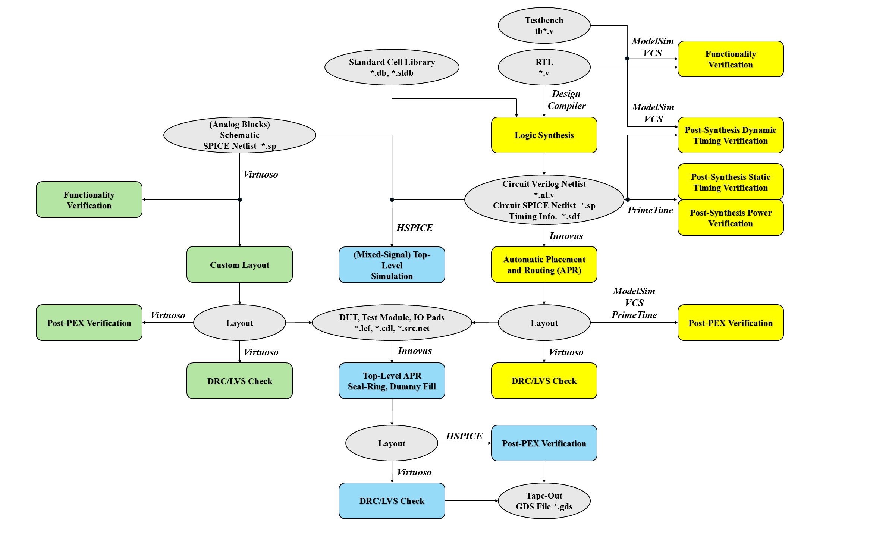Schematic and RTL Design
The analog blocks were designed in Cadence Virtuoso and verified using Spectre simulations to evaluate functionality and performance. The digital blocks were implemented using Verilog RTL, synthesized with Synopsys Design Compiler, and verified through ModelSim, PrimeTime, and VCS for functional correctness, timing closure, and power analysis.
For the mixed-signal top-level closed-loop simulation, HSPICE is used. The analog top-level netlist is extracted from Virtuoso, and the digital top-level Verilog netlist is converted into a SPICE-compatible format through custom scripting. These two domains are then integrated in a separate top-level SPICE netlist, which is used to perform the full mixed-signal closed-loop simulation and validate the overall system behavior.
Physical Design
[Explain physical implementation: floorplanning, placement, clock tree synthesis, routing, and timing closure.]
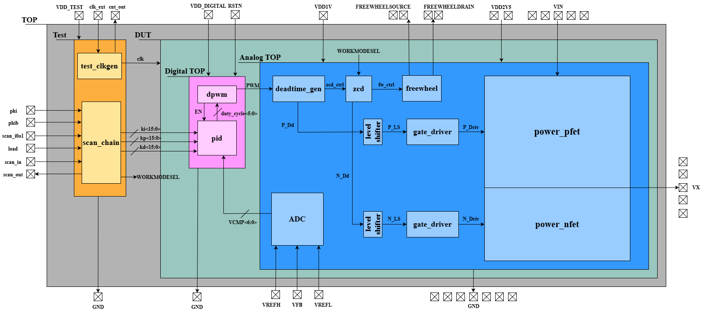 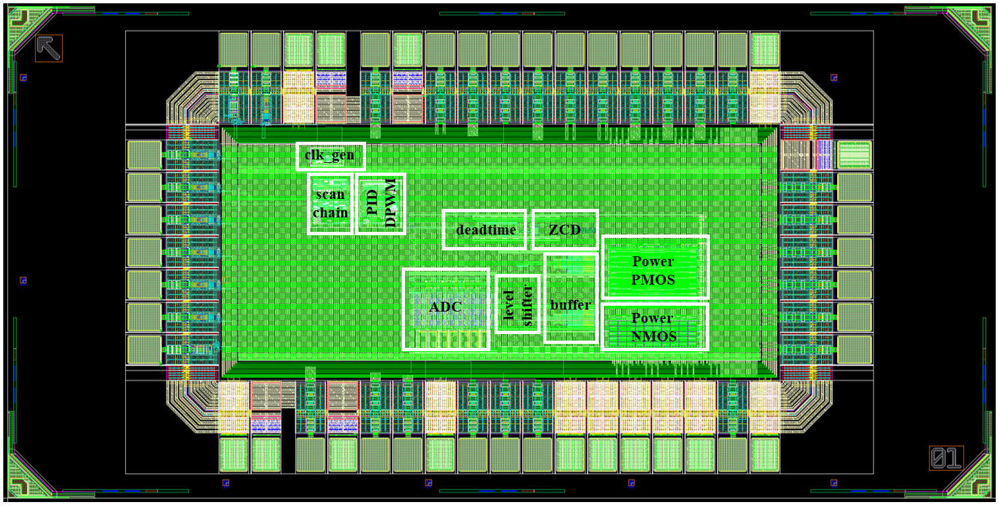The top-level post-layout simulation results are shown as follows.
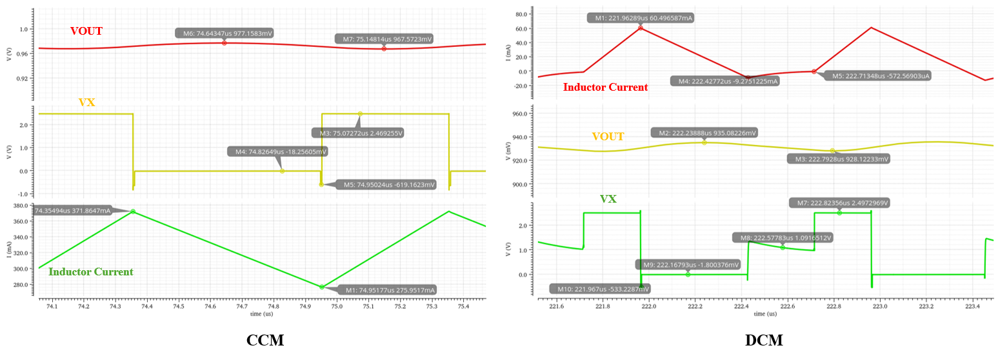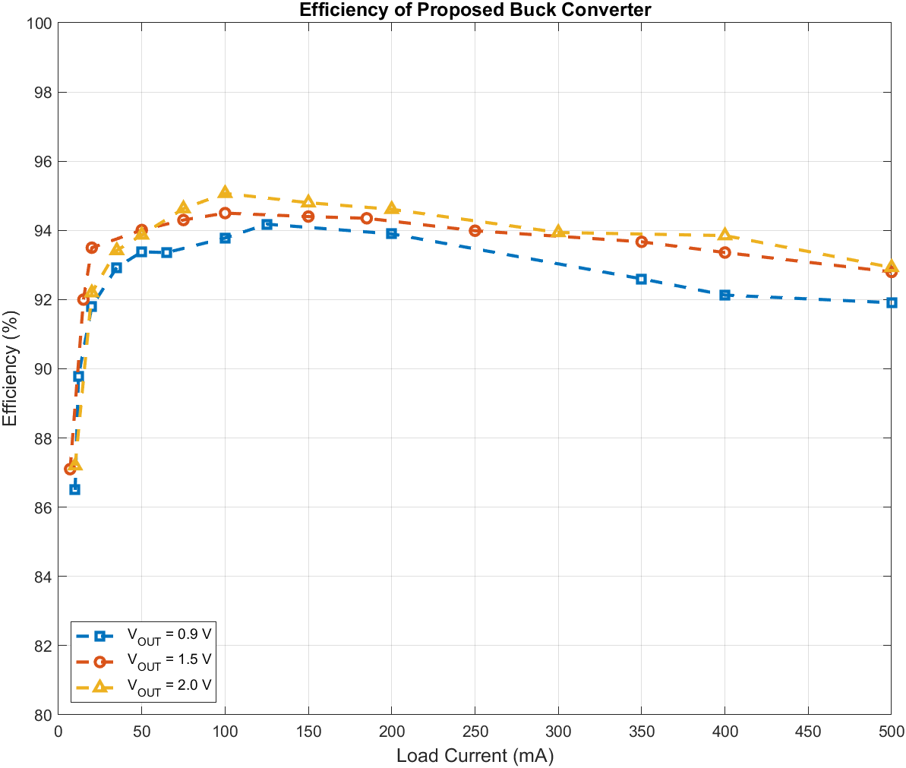
Software & Testing Flow
[Replace with software and testing description: Explain the software stack, test programs, simulation methodology, and post-silicon validation approach.]
Software Development
[Describe software tools, programming interface, test applications, and benchmarks used.]
Testing Methodology
[Explain pre-silicon verification, post-silicon testing procedures, and measurement techniques.]
PCB Design
[testing:::: Replace with PCB design description: Detail the test board architecture, power delivery, signal integrity considerations, and measurement infrastructure.]
Board Architecture
[Describe PCB layout, connector pinout, external components, and interface circuits.]
Power Distribution
[Explain power supply design, voltage regulators, decoupling strategy, and current monitoring.]
Demonstration
[Replace with demonstration description: Show working examples, test results, and real-world performance of your chip.]
Video Demonstration
Chip Specifications
The chip specifications are listed in the following table.
| Parameter | Specification |
|---|---|
| Technology | TSMC 65nm |
| Die Size | 2mm × 1mm |
| Input Voltage | 2.5V |
| Output Voltage | 0.9~1.8V |
| Supply Voltage | 1V core, 2.5V I/O |
| Maximum Load Current | 500mA |
| Output Voltage Ripple | ~50mV |
| Current Ripple | ~100mA |
| Switching Frequency | ~1MHz |
| Package | QFP-64L |
Conclusions
[Replace with conclusions: Summarize achievements, lessons learned, challenges overcome, and potential future improvements.]
Key Achievements
[List major accomplishments and successful design outcomes.]
Lessons Learned
[Discuss important insights gained during the design process.]
Future Work
[Describe potential enhancements and next-generation features.]
References
[Replace with references: List academic papers, technical manuals, and other resources cited in your project.]
- [Reference 1: Author, Title, Publication, Year]
- [Reference 2: Author, Title, Publication, Year]
- [Reference 3: Author, Title, Publication, Year]
Acknowledgments
We would like to thank everyone who supported us throughout this project and made this work possible.
We are especially grateful to our course advisor, Prof. Mingoo Seok, for giving us the invaluable opportunity to participate in this class and experience our first-ever tape-out. He proposed the project topic, met with us weekly to review our progress, and guided us with his technical expertise and extensive experience in chip design.
Special thanks go to Yichen Xu, who has a solid power management IC background and was consistently available to answer our questions and help us overcome critical challenges throughout the design process.
We also thank our teaching assistants, Mosom Jana, Da Won Kim, and Chuan-Tung Lin, for providing us with technical resources and insightful suggestions.
Finally, we would like to express our sincere appreciation to Apple Inc. for their generous support and sponsorship, without which this project would not have been possible. We further extend our gratitude to the Apple engineers who participated in our design reviews and offered invaluable feedback.